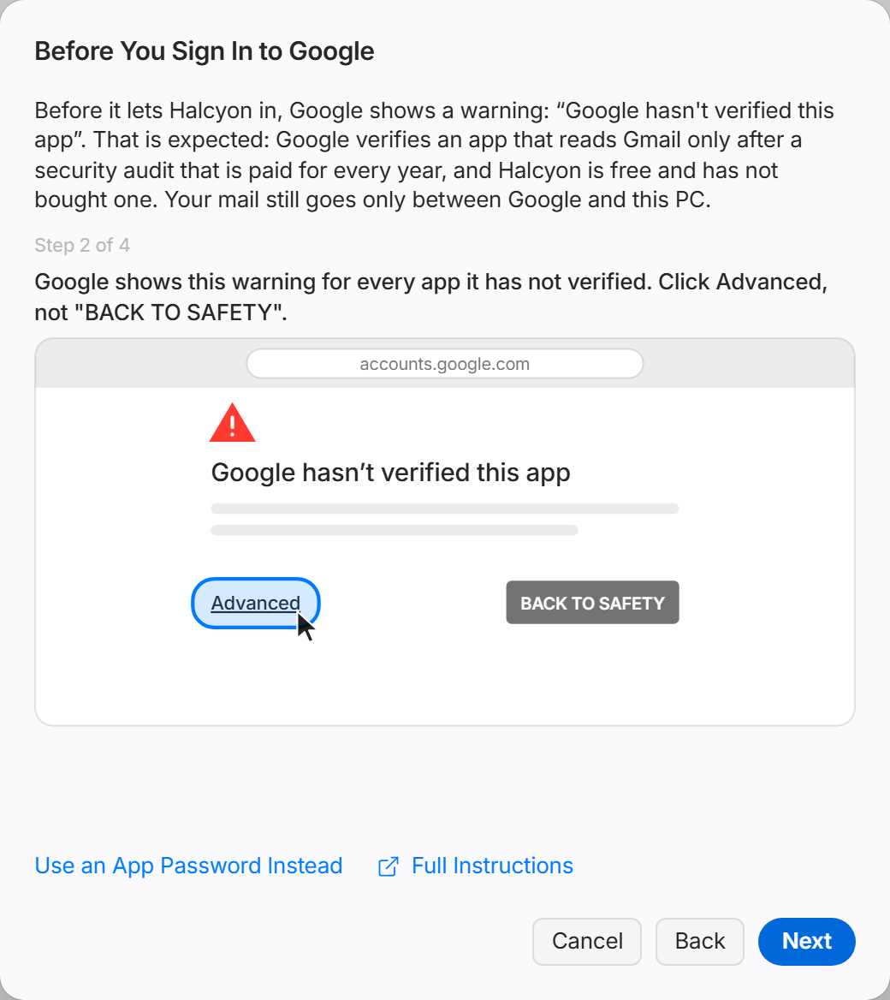
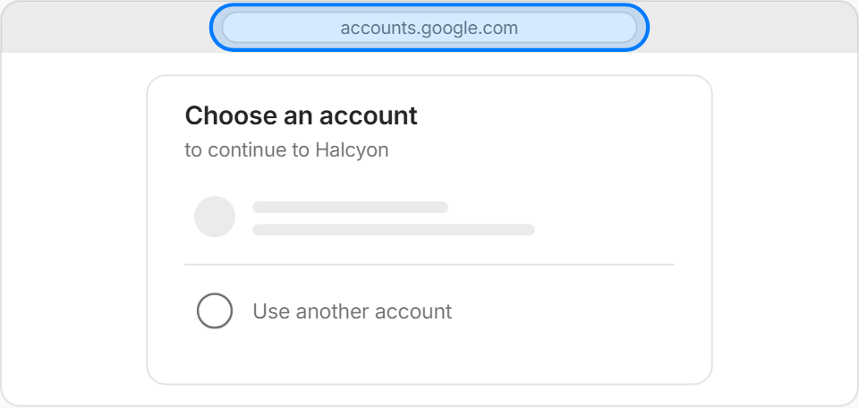
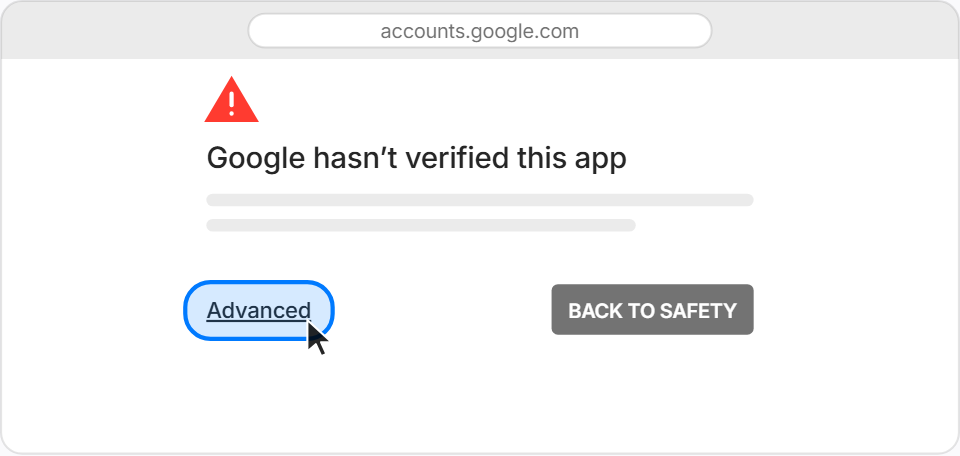
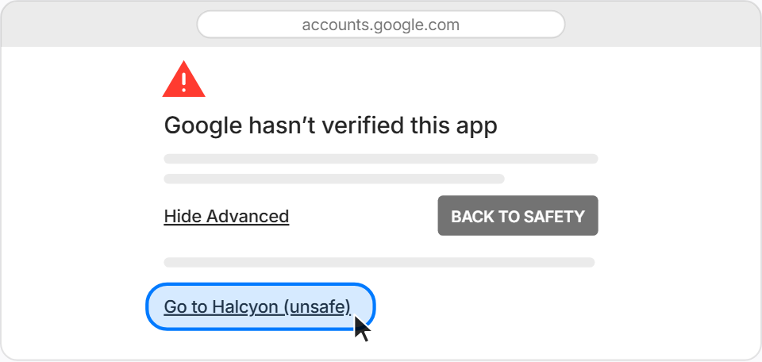
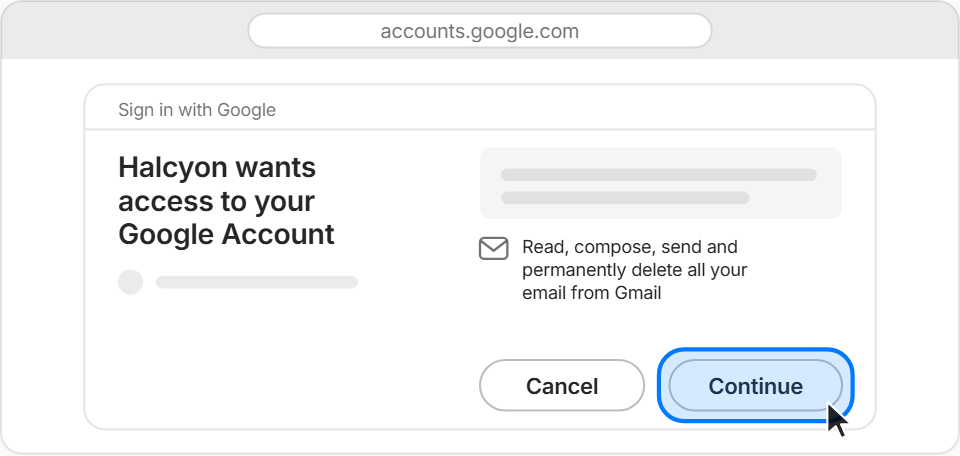
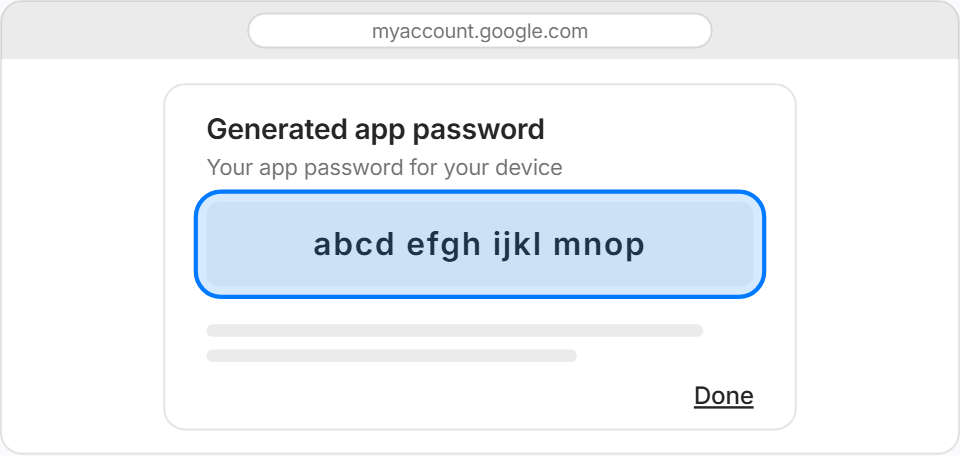
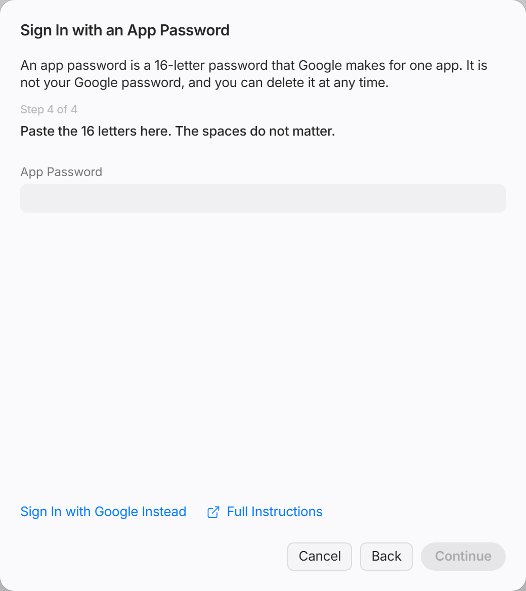

There are two ways to add a Google account to Halcyon. Both do the same job, and neither
sends your mail or your password to us.
Which one to use
Sign in with Google, in your browser. The quicker
of the two. Google shows a warning first, which is explained below, and lets only a
limited number of people sign in this way.
An app password. About two minutes. There is
no warning and no limit. Your Google account needs 2-Step Verification.
If the first does not work for you, use the second.
The pictures of Google’s pages are drawings, not photographs, so that nobody’s
account is in them. The thing to press is ringed. Halcyon shows you the same pictures as you
go, so you do not need to keep this page open. Google changes its pages from time to time;
the words to look for stay the same.
Sign in with Google
In Halcyon, choose Google and press Continue. Type your
name and your Gmail address, and press Continue again.
Halcyon shows a page called Before You Sign In to Google. It goes through
Google’s screens one at a time, the same four as below. Press
Next through them, then Continue to Google. Your browser
opens.

Check that the address begins accounts.google.com. Choose your Google
account, or sign in, if Google asks. If you are already signed in, Google may skip this.

Google shows a page headed Google hasn’t verified this app.
Click Advanced, the small link on the left. Not
BACK TO SAFETY, which takes you away again.

More of the page opens. Click Go to Halcyon (unsafe), at the bottom.

Google asks whether Halcyon may read, compose, send and permanently delete your email.
That is what a mail client does. Click Continue, at the foot of the
page. You may need to scroll down to see it.

Go back to Halcyon. It finishes by itself, and your mail starts to arrive.
Why Google shows that warning
Google reviews every app that reads Gmail, and the review ends with a security audit by an
outside firm, which the developer pays for again every year. Halcyon is free, and has not
bought one. So Google has not verified it, and says so to everyone who signs in. The word
“unsafe” is on that link for every app Google has not verified.
What you can check for yourself:
The source code is public, so anyone can
read what Halcyon does with the access.
The privacy policy says what it does: your mail is
downloaded to your computer and stays there. None of it is sent to us.
Google lets only 100 people sign in to an app it has not verified, counted over the whole
life of the app. Once that number is reached, Google shows an error page where the sign-in
should be. Nothing is wrong with your account.
Go back to Halcyon and press Cancel. It then shows the steps for an app
password, which has no such limit.
Use an app password
An app password is a 16-letter password that Google makes for one app. It is not your Google
password, and you can delete it whenever you like.
Turn on 2-Step Verification, if it is not on already. Open
2-Step Verification in your
Google Account and follow Google’s steps. Google only makes app passwords for
accounts that have it.
Google shows 16 letters, and shows them only once. Copy them.

In Halcyon, choose Google and press Continue. Type your
name and your Gmail address, and press Continue again.
On Before You Sign In to Google, press
Use an App Password Instead. Halcyon goes through the three steps above.
Since you have done them, press I Already Have One.
Paste the 16 letters into App Password and press
Continue. The spaces do not matter.

Halcyon checks the connection and shows Account Ready. Press
Add Account.
If Google has no app passwords page for you
Google does not offer app passwords when:
2-Step Verification is off. Step 1 above turns it on.
2-Step Verification is set up with a security key and nothing else.
The account belongs to a workplace or school that has turned app passwords off.
In Halcyon: removing the account under
Settings → Accounts deletes its mail and its saved sign-in from your
computer.
This page describes Halcyon 1.0.3 and later. Version 1.0.2 has no
Before You Sign In to Google page and no pictures: the browser opens as
soon as you continue from your address, and Use an App Password Instead is
on that address step, which is also where Cancel returns you.